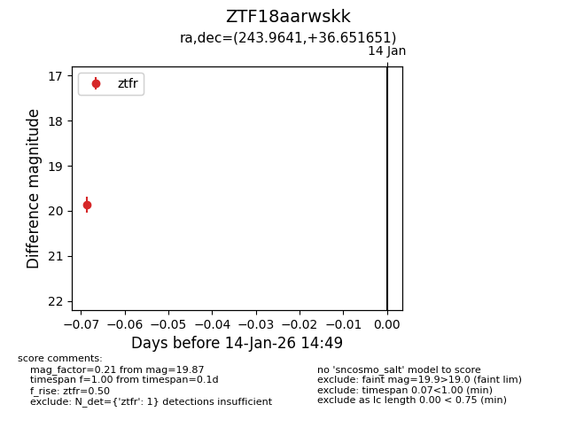
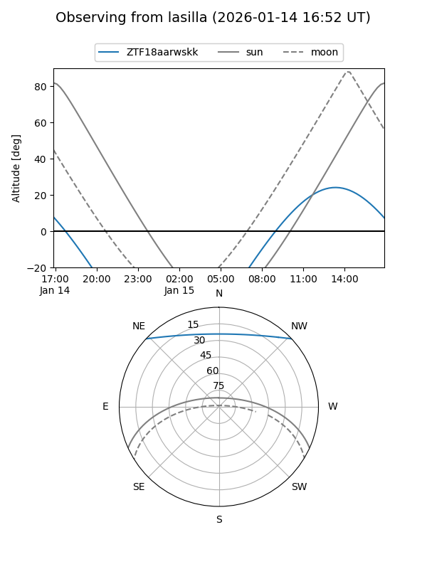
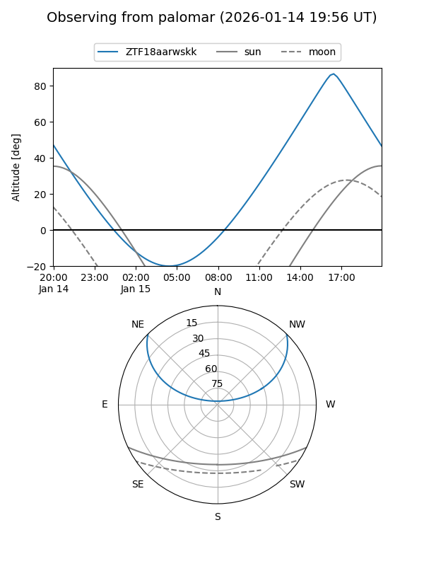

ZTF18aarwskk
Target ZTF18aarwskk at 2026-01-14 14:50
Aliases and brokers:
FINK: link
Lasair: link
ALeRCE: link
alt names
ZTF18aarwskk (ztf,fink_ztf)
Coordinates:
equatorial (ra, dec) = 243.9641,+36.65165
equatorial (HMS+DMS) = 16:15:51.38,+36:39:05.94
galactic (l, b) = (58.7113,+46.09841)
Flags:
Photometry:
last ztfr=19.87
1 ztfr detections
Lightcurve

Visibility


Additional plots